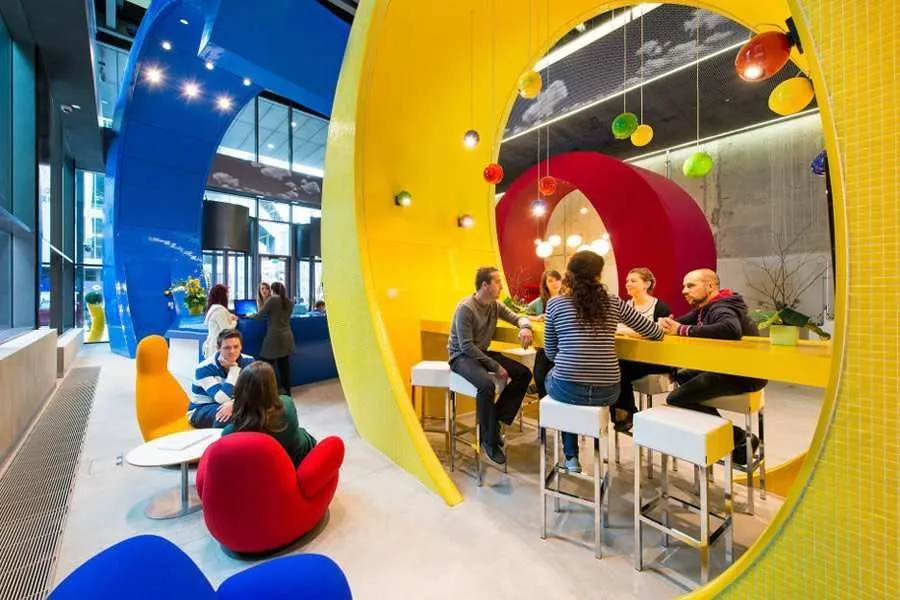
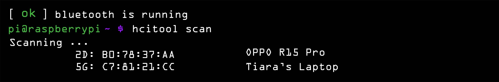
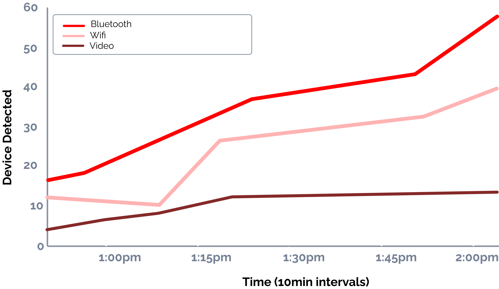
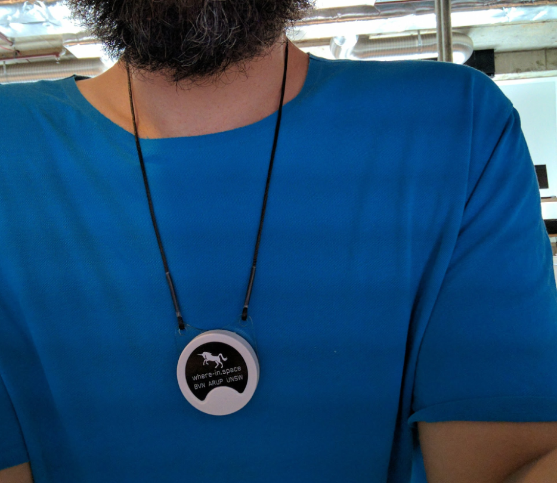

PART ONE
Project Overview
PROJECT OVERVIEW
The Opportunity
Many organisations invest heavily in finding ways to differentiate themselves through ideas, concepts, and
strategies. One way of doing this is through encouraging more face-to-face interactions amongst workers.
Encouraging face-to-face interactions through design is often top of mind for architects yet the tools required to testquantitatively how effective these spaces, do not exist. For years, organisations invested in hot-desking and open studios to spark collaboration, yet lacked trustworthy post-occupancy tools to validate impact. Decisions were driven by anecdotes, fit-outs were hard to justify, and valuable spaces were under-used—limiting spontaneous connection and eroding confidence in workplace strategy.
The main question remained: What made a good, flexible, collaborative work environment?
ARUP | BVN | UNSW
Role: Product Design Lead
Key Responsibilities
- Developed an Algorithm to identify Face-to-face interactions
- Design Hardware for low-cost commodity hardware Beacons and receiever Stations
- Preliminary testing for proof of concept
- Experimentation designer and instigator
- Stakeholder relations and funding coordinator
- Visualisation using Python and Grasshopper
PROJECT OVERVIEW
Background
Many companies have seen great improvement from rethinking their office spaces with impromptu collaboration in mind such as Google, Pixar, Disney and many others. The engineers and the artists are no longer seated in offices across the campus but can chat over the water cooler or use a communal kitchen during the day.

Image taken from Propmodo Decoding Realestate of the Google Headquarters Office.
Observational Studies are...
awkward?
Existing research in this area has relied heavily on the manual collection of data, which made the repetition of experiments both time-consuming and laborious. Compounding this issue, GPS proved unreliable in indoor environments, limiting its usefulness for precise tracking. Furthermore, many of the available technologies required expensive equipment and significant manual effort, creating barriers to scalability and widespread adoption.
PROJECT OVERVIEW
The Mission
Our mission was to turn open-plan intent into measurable outcomes by building a low-cost, real-time
indoor positioning system that quantifies face-to-face interactions.
By tackling this gap head-on, our goal was to provide a privacy-first, evidence-based way to
test and iterate workplace design combining commodity beacons and receiver stations,
interaction-detection algorithms, and clear visualisations—to rebuild trust in design decisions,
align stakeholders, and measurably increase in-person collaboration. In partnership with BVN, ARUP,
and UNSW, we proved feasibility through a practical proof-of-concept and created a path to scale.
The Impact
Not only did the research result in two publications to the CAADRIA technology paper presented in New Zealand, but ARUP and BVN now have a streamline way of gathering qualitative data for their post construction usability studies.
01 Delivered a proof-of-concept prototype to track and analyse workplace interactions.
01 Captured over 12,000 data points during a 6-week pilot, mapping patterns of collaboration, focus time, and informal conversations.
01 Discovered that 37% of interactions occurred in unplanned breakout areas, highlighting the need for more flexible collaboration zones.
01 Identified under-utilised meeting rooms and peak times of cross-team engagement, providing clear opportunities to optimise space.
01 Equipped the design team with evidence-based insights to shape their own workplace strategy.
01 Extended impact beyond the pilot — findings are now influencing future client workplace designs, enabling smarter, human-centred environments.
PART TWO
Foundational Research
FOUNDATIONAL RESEARCH
Technology Review
Our first step was a technology review to determine whether an existing solution already met the need, or if we would have to build one using commodity hardware.
What we knew could work...
Device sends a signal to connect
Tracking device listens for request
Sniffing software measures traffic
Data records to database
Video surveillance evaluates accuracy
The combination of Wi-Fi and Bluetooth improves accuracy: Wi-Fi helps with general location, while Bluetooth can provide fine-grained proximity in smaller areas.
How the tracker would work...
Acts as the core computer of the system
Serves as the primary storage for the Raspberry Pi’s operating system (like Raspberry Pi OS)
Scans nearby Wi-Fi access points and records their signal strengths (RSSI) and identifiers (SSID/MAC)
Detects nearby Bluetooth devices or beacons (like BLE beacons).
FOUNDATIONAL RESEARCH
Assumptions
01 Those not carrying a device and multiple devices: This can cause a bias in our results as they enter the space. The video camera acts as a control to evaluate the impact of the data during our experiments.
02 Discoverable mode switched off: A person will be ‘invisible’ if:
- Their device has WiFi or Bluetooth turned off
- The device has never accessed BVN’s WiFi before
03 Environmental Complexities: In an office, signal loss is a significant factor for unreliable data. There are many things that can interfere the line of sight between emitter and receiver:
- Different building materials e.g. concrete columns Walls
- Furniture
- People
- Appliances e.g. microwaves, fridges
Queried & Discovered
When devices are discoverable, they can be queries using the software and hardware with the individuals device information captured.

However, the tracker couldn’t detect outgoing traffic, which assumes that a person is still in the area from the moment they were detected until the end of the experiment. Sniffing software was used to collect more information about every detected device and to have some assemblance of when a individual might enter or leave but it wasn’t enough.

FOUNDATIONAL RESEARCH
Exhaustive Review — Commodity Hardware Comparison
A compact technology review of common IPS approaches you can build with commodity hardware (Raspberry Pi, USB adapters, smartphones, cheap beacons, cameras, etc.).
| Method | Typical Accuracy | Typical Cost | Pros | Cons / When to Avoid |
|---|---|---|---|---|
| Wi-Fi Fingerprinting | 2–8 m | Low–Medium (no infra cost if APs exist) |
• Uses existing Wi-Fi infrastructure. • Works well in dense AP environments. • Easy to prototype with Raspberry Pi / phones. |
• Sensitive to environmental & AP changes (recalibration needed). • Fingerprint collection is labour-intensive for large spaces. |
| Wi-Fi Trilateration / RSSI | 3–15 m | Low–Medium |
• Conceptually simple (distance estimates to APs). • No additional beacons required if AP locations known. |
• RSSI↔distance mapping is noisy indoors; poor accuracy without calibration. • Requires multiple visible APs with known locations. |
| BLE Beacons (iBeacon / Eddystone) | 1–5 m (proximity) / ~1–3 m with fingerprinting | Low (\$5–\$30 per beacon) |
• Inexpensive, easy to deploy. • Good for proximity and zone detection. • Works with phones and Pi Bluetooth dongles. |
• Battery maintenance for beacons. • RSSI still noisy; careful placement required for consistent zones. |
| RFID / NFC | < 1 m (proximity) | Low (tags & readers cheap) |
• Very reliable for explicit proximity / checkpoints. • Simple to implement for access control or object tagging. |
• Not suitable for continuous tracking across a whole floor. • Requires users/devices to be near tags/readers. |
| Cellular (GSM/LTE) | 10–100s m (coarse) | Low (uses phones) |
• No extra infrastructure when using phones. • Useful as coarse fallback outdoors or mixed environments. |
• Very coarse indoors — typically not useful alone for room-level accuracy. |
| UWB (Ultra-Wideband) | 0.1–0.5 m | Medium–High (anchor kits & tags) |
• High precision and low latency. • Great for real-time tracking (assets, people). |
• Requires UWB hardware (not as ubiquitous though becoming common). • Higher cost and setup complexity relative to BLE/Wi-Fi. |
| Camera + Visual SLAM | 0.1–1 m (depending on setup) | Low–Medium (cameras + compute) |
• High spatial detail; builds maps and tracks without beacons. • Good for robotics and AR use cases. |
• Sensitive to lighting and visual occlusion. • Privacy concerns if capturing video in workspaces. |
| QR Codes / Visual Markers | < 0.5 m (when in view) | Very Low (print markers) |
• Extremely cheap and robust for known checkpoints. • No radio infrastructure; easy to implement. |
• Requires line-of-sight and active scanning. • Not suitable for continuous free-roam tracking. |
| IMU Dead-Reckoning / PDR | Meter-level; drifts over time | Low (built into phones) |
• Good for short-term tracking between fixes. • Works offline and on-device. |
• Accumulated drift requires periodic correction from RF/vision fixes. |
| Hybrid (RF + IMU + Vision) | 0.1–3 m (depends on sensors) | Medium (mix of sensors) |
• Balances strengths of each method; robust and practical. • Can achieve room/desk level accuracy with sensor fusion. |
• More complex software (sensor fusion, calibration). • Higher integration & maintenance effort. |
Conclusion
With commodity hardware, the most practical approaches are:
- Wi-Fi fingerprinting
- BLE beacons
- Camera-based markers (QR/ArUco)
- IMU sensor fusion
PART THREE
A New Approach
After extensive research into existing technologies, we decided to build a custom solution using wearable BLE beacons and Raspberry Pi receivers to track face-to-face interactions in an office environment.
A NEW APPROACH
How it works
THE PROTOTYPE
Wearable Beacons
01 Voluntary Participation: participants can easily opt in or out by wearing or removing the beacon.
02 Low setup overhead: no need for phones or apps; the beacon works independently once powered.
03 Consistent signal source each wearable broadcasts at a steady rate, giving more reliable readings than phones with variable Bluetooth behaviour.
04 any receiver (Raspberry Pi, phone, laptop with Bluetooth) can detect them, so you’re not locked into a single device ecosystem.
05 Battery efficient: BLE beacons often last weeks to months on a coin cell, reducing charging/maintenance needs.
06 Real-time-tracking: location updates can be frequent (e.g., every second) without draining user devices.
In addition to the above, I hypothesised the beacons, when worn properly could be used to determine Field of view. A very important concept when calculating Interactions
Wearable Bluetooth Beacon - A.K.A 'The Sensicorn'

A participant posing with a beacon
THE PROTOTYPE
Receievers
In development render of the Receiever and its enclosure
Assembled receiver station
.jpg)
A progress shot taken while 3D printing parts for the Receiever station hardware enclosure
PART FOUR
Determining the Field of View
Aim
To determine whether beacon signal strength can be used to infer the facing direction of a participant, thereby distinguishing face-to-face orientation in indoor positioning systems.
Hypothesis
If a participant is facing directly toward a receiver base station, then the beacon’s signal strength received at that station will be at its maximum. Conversely, when the participant faces away, the participant’s body will obstruct the transmission path, resulting in a lower signal strength.
Methodology
Participants: A single participant was recruited for this pilot experiment.
Apparatus and Materials
- One wearable beacon transmitter.
- Four receiver base stations capable of measuring received signal strength (RSSI).
- Indoor room with minimal interference and controlled spacing.
- Data logging system for recording signal strength values.
Data Analysis
- Recorded RSSI values were compiled for each 15-degree increment.
- A polar plot was generated to visualize the variation in signal strength as a function of participant orientation relative to each base station.
- Peaks in RSSI values were interpreted as moments when the participant was directly